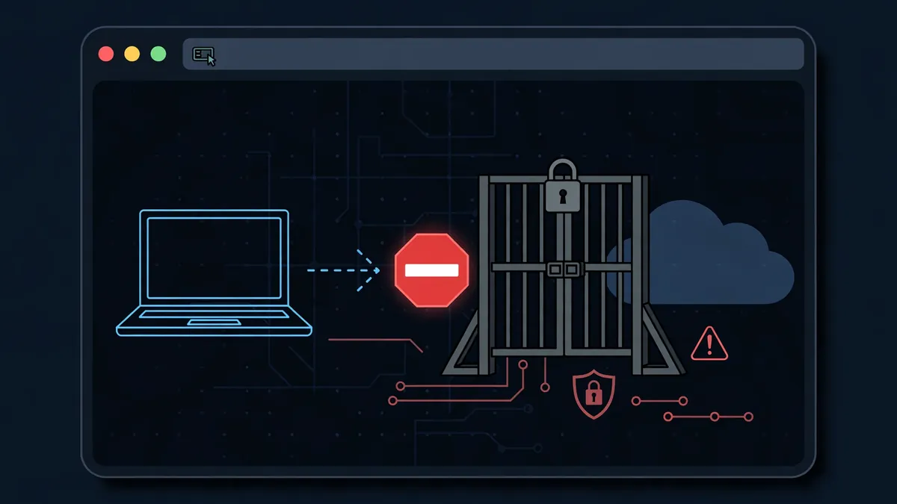
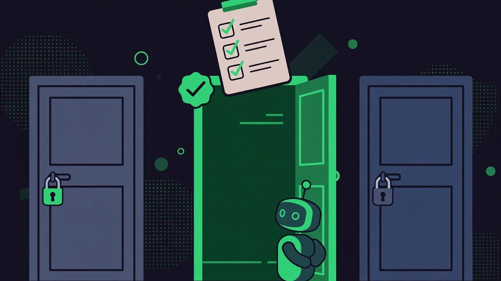

Lock your AI agent in a sandbox it can't talk its way out of: a hands-on guide to NVIDIA OpenShell
Your coding agent can read files, install packages, call APIs and spend your API keys — which is exactly why giving it your whole machine is a bad idea. NVIDIA OpenShell puts each agent in its own sandbox, governed by a policy you write, and enforced at the kernel: no network, no files, no credentials unless the policy explicitly allows them. In under an hour you will install it, watch it block a request by default, and open exactly one read-only door.
- Who: NVIDIA — OpenShell is its open-source runtime for autonomous AI agents.
- What: OpenShell, a sandbox runtime that enforces a declarative policy at the kernel on every file access, system call and network connection.
- Language and licence: written in Rust, licensed Apache-2.0.
- Popularity: 19,936 GitHub stars and 1,972 forks for NVIDIA/OpenShell, fetched October 26, 2026.
- Platforms: Linux, macOS on Apple Silicon, and Windows with WSL 2 (experimental), plus Docker, Podman or host virtualization.
- Default posture: default-deny — with no network policy, every outbound connection is blocked; the read-only rule in this guide permits only GET, HEAD and OPTIONS for one binary to one host.
- Credentials: agents never see real credentials — OpenShell adds them only to requests bound for approved endpoints.
- Telemetry: OpenShell collects anonymous telemetry by default; disable it with OPENSHELL_TELEMETRY_ENABLED=false on the gateway.
An autonomous agent is only useful if it can do things: read your files, run commands, call APIs, spend credentials. That is also what makes it dangerous. A prompt injection, a poisoned dependency or one careless instruction can turn "fix the bug" into "exfiltrate the keys". The usual answer — run the agent in a container and hope — is a wrapper the agent can often talk its way around. OpenShell's answer is different: the policy is enforced by the kernel, not by asking the agent nicely.
OpenShell is NVIDIA's open-source runtime for fleets of autonomous AI agents. It has three pieces: a gateway (the control plane), a supervisor, and sandboxes — isolated environments, minimal Ubuntu by default, where each agent runs. You declare what an agent can touch in a policy, and OpenShell enforces it on every file access, system call and network connection. Before a policy change is applied, formal verification flags risky new access it would grant — reaching a new host with credentials, calling a new API method — so those changes wait for human review. And agents never see real credentials: OpenShell adds them only to requests bound for approved endpoints.
What follows is NVIDIA's own first-network-policy walkthrough, rebuilt end to end: install, default-deny, one read-only rule, proof in both directions, cleanup. You need no API key and no paid model — the whole demo runs against GitHub's unauthenticated zen endpoint.
What you'll need
Linux, macOS on Apple Silicon, or Windows with WSL 2 (experimental) — those are the platforms the README lists — plus Docker, Podman or host virtualization running. You will use two terminals: one inside the sandbox, one on your host. Keep the sandbox shell open for the whole walkthrough: exiting it stops the sandbox's main process, and with the default restart policy the sandbox is not reconnectable afterwards.
A sandbox with one door
1. Install the CLI and start the gateway
Install the binary with the official installer. As with any curl | sh installer, read the script first on a machine you care about:
curl -LsSf https://raw.githubusercontent.com/NVIDIA/OpenShell/main/install.sh | shThe installer sets up the openshell CLI and a local gateway. The default sandbox image is minimal Ubuntu with no agent installed — you bring your own agent later. That emptiness is the point: the first thing you test is what the box refuses to do.
2. Create the demo sandbox
Create a sandbox called demo. The --no-auto-providers flag skips the provider setup prompt, since this walkthrough uses curl instead of an AI agent:
openshell sandbox create --name demo --no-auto-providersYou land in an interactive shell inside the sandbox, with a prompt like sandbox@demo:~$. Leave this shell open and open a second terminal on your host for the log and policy commands, which run outside the sandbox.
3. Watch default-deny block a request
From inside the sandbox, try GitHub's zen endpoint — a lightweight, unauthenticated endpoint that returns a short aphorism, chosen here precisely because it needs no token:
curl -s https://api.github.com/zenThe request fails. By default, all outbound network traffic is denied: the sandbox proxy intercepts the HTTPS CONNECT to api.github.com:443 and rejects it because no network policy authorizes curl to reach that host:
curl: (56) Received HTTP code 403 from proxy after CONNECTNothing has been configured yet, and that is the test passing. A sandbox that needs a rule for its very first request is a sandbox whose default is safe.

4. Read the deny log
Switch to your host terminal and query the sandbox logs for the last five minutes:
openshell logs demo --since 5m --source sandboxYou see a line like this (the timestamp will differ):
[1775014132.690] [sandbox] [OCSF ] [ocsf] NET:OPEN [MED] DENIED /usr/bin/curl(64) -> api.github.com:443 [policy:- engine:opa] [reason:network connections not allowed by policy]Every denied connection is logged with the destination, the binary that attempted it and the reason. Nothing gets out silently — and that audit trail is what makes the next step safe to reason about.
5. Open one read-only door to the GitHub API
Now add a network rule that grants curl read-only access to the GitHub API. Run this from your host terminal:
openshell policy update demo \
--rule-name github_api \
--binary /usr/bin/curl \
--add-endpoint api.github.com:443:read-only:rest:enforce \
--waitThe endpoint specification lists host, port, access preset, protocol and enforcement mode. rest tells the proxy to terminate TLS and inspect each HTTP request; read-only permits GET, HEAD and OPTIONS; enforce blocks everything else. --wait waits until the sandbox reports a result for the new policy revision. No restart is required: network rules reload while the sandbox runs. The rule is equivalent to this YAML in the policy's network_policies section:
network_policies:
github_api:
endpoints:
- host: api.github.com
port: 443
protocol: rest
enforcement: enforce
access: read-only
binaries:
- path: /usr/bin/curlNotice how narrow this is: one host, one port, one binary, three HTTP methods. To scope a rule to an agent instead of curl, you would use the agent's binary — for example /usr/local/bin/claude — in the same position. That per-binary binding is the whole trick: a rule never becomes a blanket permission for everything in the box.
6. Prove reads work and writes don't
Back in the sandbox shell, retry the same request:
curl -s https://api.github.com/zenThis time it works: the read-only preset lets the GET through, and you get a one-line aphorism back. Now test the other side of the rule — a write:
curl -s -X POST https://api.github.com/repos/octocat/hello-world/issues \
-H "Content-Type: application/json" \
-d '{"title":"oops"}'The proxy returns a 403 with a JSON body including fields like these:
{...,"error":"policy_denied",...,"policy":"github_api",...,"rule":"POST /repos/octocat/hello-world/issues",...}The connection itself was allowed — api.github.com is on the list — but the proxy inspected the HTTP method and refused it, because POST is not in the read-only preset. An agent with this policy can read code from GitHub but cannot create issues, push commits or modify anything. Check the host logs once more and you will find the request-level denial recorded separately, with the exact method and path that was rejected. If you want to build a policy iteratively instead, set enforcement: audit rather than enforce: violations are logged without blocking, and you switch to enforce when the rules are right.

7. Clean up and run a real agent next
Delete the sandbox to free resources. This stops all processes and purges any injected credentials:
openshell sandbox delete demoFrom here, the real test is a real agent. NVIDIA's Run Your First Agent guide runs OpenCode against a free OpenRouter model inside a sandbox and shows how to approve new access as the agent asks for it — the policy loop you just rehearsed with curl, with a model doing the asking. If your coding agent supports skills, install OpenShell's public skills, which teach the agent to drive the CLI, write policies and debug gateways:
npx skills add NVIDIA/OpenShellFor fleet-sized deployments the gateway also deploys on Kubernetes with Helm, with the caveat that your CNI must enforce NetworkPolicy. But start with one sandbox, one rule and one denied POST. That is the whole security model, at a size you can hold in your head.
Honest limitations
OpenShell is at version 0.1.x: the README advertises a stable release cadence, but this is early software, not a finished appliance — expect rough edges and read the support matrix before depending on it. Windows support through WSL 2 is explicitly experimental, and the default sandbox ships with no agent at all, so the first-agent walkthrough is a separate step, not something the installer hands you. The policy you write is only as good as its bindings: a rule for curl does nothing for your agent's binary, and a rule that names a host does not vet what the agent does with the data it reads. Telemetry is on by default — anonymous, limited to operational categories and counts, with no sandbox names, prompts, credentials or user content, but on until you switch it off with OPENSHELL_TELEMETRY_ENABLED=false on the gateway. And the audit trail only helps if someone reads it: in production, export the policy events to your SIEM rather than letting them scroll past in a terminal.
None of that diminishes the core idea, which this walkthrough proves in about ten commands: the agent's freedom should be a policy you can read, a log you can audit, and a default of no — not a hope and a container.
Frequently asked questions
Do I need Docker to run OpenShell?
You need Linux, macOS on Apple Silicon, or Windows with WSL 2 (experimental), plus Docker, Podman or host virtualization running. The sandbox itself is a minimal Ubuntu image by default, and the installer sets up the CLI and a local gateway.
Does the agent ever see my API keys?
No. OpenShell's rule is that agents never see real credentials: it adds them only to requests bound for approved endpoints, and deleting a sandbox purges any injected credentials. Before a policy change is applied, formal verification flags risky new access — such as reaching a new host with credentials — so those changes wait for human review.
What happens if I close the sandbox shell?
Exiting the sandbox shell stops the sandbox's main process, and with the default restart policy the sandbox is not reconnectable afterwards. Keep the sandbox shell open for the whole walkthrough, and add --no-keep at creation time if you want the sandbox deleted automatically when you exit.